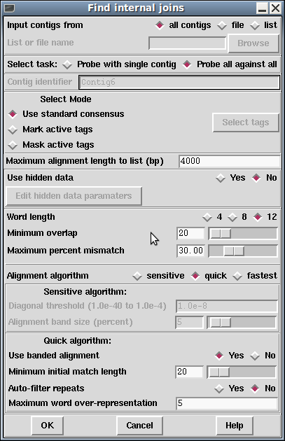

The contigs to use in the search can be defined as "all contigs", a list of contigs in a file "file", or a list of contigs in a list "list". If "file" or "list" is selected the browse button is activated and gives access to file or list browsers. Two types of search can be selected: one, "Probe all against all" compares all the contigs defined against one another; the other "Probe with single contig", compares one contig against all the contigs in the list. If this option is selected the Contig identifier panel in the dialogue box is ungreyed. Both sense of the sequences are compared.
If users elect not to "Use standard consensus" they can either "Mark active tags" or "Mask active tags", in which cases the "Select tags" button will be activated. Clicking on this button will bring up a check box dialogue to enable the user to select the tags types they wish to activate. Masking the active tags means that all segments covered by tags that are "active" will not be used by the matching algorithms. A typical use of this mode is to avoid finding matches in segments covered by tags of type ALUS (ie segments thought to be Alu sequence) or REPT (ie segment that are known to be repeated elsewhere in the data (see section Tag types). "Marking" is of less use: matches will be found in marked segments during searching, but in the alignment shown in the Output Window, marked segments will be shown in lower case.
Some alignments may be very large. For speed and ease of scrolling Gap5 does not display the textual form of the longest alignments, although they are still visible within the contig comparator window. The maximum length of the alignment to print up is controlled by the "Maximum alignment length to list (bp)" control.
The default setting for the consensus is to "Use hidden data" which means that where possible the contigs are extended using the poor quality data from the readings near their ends. To ensure that this additional data is not so poor that matches will be missed, the program uses algorithms which can be configured from the "Edit hidden data parameters" dialogue. Two algorithms are available. Both slide a window along the reading until a set criteria is met. By default an algorithm which sums confidence values within the window is used. It stops when a window with < "Minimum average confidence" is found. The other algorithm counts the number of uncalled bases in the window and stops when the total reaches "Max number of uncalled bases in window". The selected algorithm is applied to all the readings near the ends of contigs and the data that extends the contig the furthest is added to its consensus sequence.
If your total consensus sequence length (including a 20 character header for each contig that is used internally by the program) plus any hidden data at the ends of contigs is greater than the current value of a parameter called maxseq, Find Internal Joins may produce an error message advising you to increase maxseq. Maxseq can be set on the command line (see section Command line arguments) or by using the options menu (see section Set Maxseq).
The search algorithms first finds matching words of length "Word length", and only considers overlaps of length at least "Minimum overlap". Only alignments better than "Maximum percent mismatches" will be reported.
There are three search algorithms: "Sensitive", "Quick" and "Fastest". The quick or fastest algorithm should be applied first, and then the sensitive one employed to find any less obvious overlaps.
The sensitive algorithm sums the lengths of the matching words of length "Word length" on each diagonal. It then finds the centre of gravity of the most significant diagonals. Significant diagonals are those whose probability of occurence is < "Diagonal threshold". It then uses a dynamic programming algorithm to align around the centre of gravity, using a band size of "Alignment band size (percent)". For example: if the overlap was 1000 bases long and the percentage set at 5, the aligner would only consider alignments within 50 bases either side of the centre of gravity. Obviously the larger the percentage and the overlap, the slower the aligment.
The fastest and quick algorithms can find overlaps and align 100,000 base sequences in a few seconds by considering, in its initial phase only matching segments of length "Minimum initial match length". However it does a dynamic programming alignment of all the chunks between the matching segments, and so produces an optimal alignment. Again a banded dynamic algorithm can be selected, but as this only applies to the chunks between matching segments, which for good alignments will be very short, it should make little difference to the speed. the fastest and quick methods only differ in how aggressively they prune potential alignments before entering the dynamic programming phase.
After the search the results will be sorted so that the best matches are at the top of a list where best is defined as a combination of alignment length and alignment percent identity. This list can be stepped through, one result at a time using the Contig Joining Editor, by clicking on the "Next" button at the top left of the Contig Comparator.